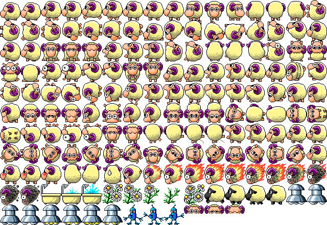

Lite build
This page loads the ES module build without inlined assets. It fetches sprites.png and the WAV files from ../assets/. It also uses a scale of 2.

This page loads the ES module build without inlined assets. It fetches sprites.png and the WAV files from ../assets/. It also uses a scale of 2.
